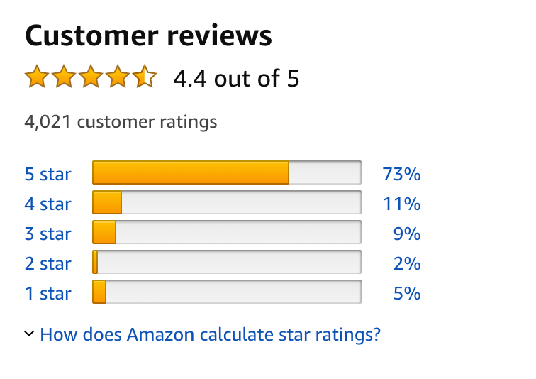

Chapter 12 Basic Statistical Concepts
For the next 8 chapters our focus will shift from manipulating and visualising sets of numbers to analysing them, and as a starter this chapter has brief notes on some of the important fundamental concepts used to summarise and understand sets of data. If you’re happy that you understand the difference between a population and a sample, and if (unlike at least 50% of academics in the biological sciences…) you know what a 95% confidence interval actually means then you might want just to skim through this chapter to pick up on the various R functions that are mentioned. If, on the other hand, your stats are a bit rusty or rudimentary this should act as a useful reminder, and the notes on how the various functions work in R should also be helpful. Please also have a look at the next chapter which is on statistical testing since this is a subject that lots of people are confused about even when they have had some stats training - to tell the truth, it’s a subject that a lot of people are confused about because they’ve had some stats training, which is why I’ve put something in to try to help with this rather confusing issue.
This chapter and the next will show you the basics of data description and statistical testing but they aren’t a substitute for proper training in statistics. If you are really a statistical novice then you might feel the need to look further afield for more information. There are an awful lot of books on statistics out there, and they range from the easily read and digested to the completely incomprehensible: I recommend that you seek out the former and avoid the latter. The exact choice of where you get your information will depend on what your particular interests are: for biologists I recommend Experimental Design and Data Analysis for Biologists by Quinn and Keough (2002, Published by CUP, ISBN 978-0521009768) but if you’re in a different field then you’ll need to shop around.
12.1 Populations and Samples
In statistics, the population consists of all of objects that you could potentially measure. This might be all of the lung cancer patients in the World, all of the malaria parasites infecting a particular species of lizard, all of the men in Europe between the ages of 15 and 25, all of the households in Texas with an income greater than $100000 per annum, or all of the cars of a particular model. Most of the time, you won’t be able to carry out whatever measurements you might wish to make on an entire population, which means that you have to sample from the population: you select a subset of the population, carry out your measurements on that subset and hopefully the values that you get will be a useful estimate of the true population values. Ideally this sampling will be done randomly, which means that every member of the population has an equal chance of being chosen and the probability of one member of the population being chosen is unaffected by whether another member has been chosen. It’s often not easy to do straightforward random sampling of an entire population, in which case other techniques such as clustered sampling or stratified sampling will need to be used. There is a lot of literature out there on sampling if you need to know more. It’s best to look for material that’s specific to your field because the techniques associated with sampling vary a lot: although the fundamental problem is the same for an ecologist sampling wasps from the canopy of a tropical forest and a psychologist sampling school-age children from households of a particular economic class the solutions to the problem are likely to be rather different. You can’t sample children with a suction trap, but you don’t need to get ethics clearance and parental permission to catch wasps.
Population level parameters such as the mean and the variance are denoted by Greek letters: \(\mu\) for the mean and \(\sigma^2\) for the variance, whereas the estimates for these parameters that we calculate from our samples are denoted by Roman letters: \(\bar{X}\) (x-bar) for the mean and \(s^2\) for the variance.
12.2 Descriptive and exploratory statistics
12.2.1 Maximum and minimum
When you have done your experiment, carried out your survey or scraped your data off the website in question you need to be able to describe and explore your dataset to gain an understanding of what kind of numbers or other values you’ve aquired. Some of the most basic questions are what the largest and smallest numbers are: these can be found by using the max() and min() functions. The range() function will return both the minumum and the maximum of a vector.
12.2.2 Frequency distribution
 Most of you will be familiar with images like the one above: this is a graph of customer reviews for Star Wars: The Phantom Menace. The relative numbers (here given as percentages) of reviewers giving the various star ratings gives you information on what the reviewers thought of the movie overall, and you can also see that the distribution is bimodal: it has a big peak at 5*, but also a second, smaller peak at 1*. This tells you at least that there is controversy over the quality of the movie… if you’ve seen The Phantom Menace you will also be able to deduce from the big peak at 5* that there are a lot of brainless fanboys out there. I haven’t just put this here to rant about Star Wars, of course, and there is a more serious point: this graph is showing us the frequency distribution of the ratings for this movie.
The frequency distribution is the count of how many times each value occurs in a data set, usually visualised using a histogram. This is one ofs the most fundamental ways of looking at a set of data because it lets you see how spread out the data are and where the measurements tend to cluster. The overall shape of the frequency distribution is also very important in helping you understand the nature of your data. Frequency distributions are easiest to work out with integer data since the frequency distribution is literally the count of each value in the data set. For continuous data we divide up the range of values over which the data are found into a series of ‘bins’ and count how many values are in each bin. As an example, let’s say we have the following values in our data set.
Measure1 = 8.47, 6.08, 9.57, 12.18, 7.60, 9.67, 9.39, 10.83, 10.46, 10.55, 8.37, 10.58, 9.42, 7.95, 11.86
We can put these into R:
M1<-c(8.47, 6.08, 9.57, 12.18, 7.60, 9.67, 9.39, 10.83, 10.46, 10.55, 8.37, 10.58, 9.42, 7.95, 11.86)
min(M1)
[1] 6.08
max(M1)
[1] 12.18Our minimum is just over 6 and our maximum just over 12, so we might as well use the ranges 6.01-7,7.01-8 and so on until 12.01-13 as our bins, and we can just count the number of values that go into each.
| Bin | Count |
|---|---|
| 6.01-7 | 1 |
| 7.01-8 | 2 |
| 8.01-9 | 2 |
| 9.01-10 | 4 |
| 10.01-11 | 4 |
| 11.01-12 | 1 |
| 12.01-13 | 1 |
Looking at this table of counts you can get an idea of where the central tendency is in the data and what the shape of the frequency distibution looks like, but it’s better to draw a histogram of the frequency distribution, which you do in R with the hist() function which we already met in section 9.9.
Figure 12.1: Histogram of the frequency distribution of vector M1
A second option is to draw a boxplot, otherwise known as a box and whisker plot. Again, we met these before (section 9.10) but it’s worth quickly revisiting the way these work. The most common type of boxplot has a thick horizontal bar which indicates the median (see section on measures of central tendency), the top and bottom of the box indicating the inter-quartile range (see section on measures of dispersion) and the thin lines extending from the box (the whiskers) reach to the last data points within 1.5 times the interquartile range of the top or bottom of the box. If that last sounds a bit convulted just think of them as a representation of the spread of data outside the interquartile range. Data points outside the range of the whisker are indicated individually: these are often described as outliers but be careful with this word: it’s quite likely that they will actually be within the expected distribution of the data, and you certainly shouldn’t discount data points just because they pop up on a box plot. You can draw boxplots in R with the boxplot() function.
Figure 12.2: Boxplot of vector M1
Let’s add another data point to M1 so see what a histogram and a boxplot look like when we have a data point that’s a bit different from the rest.
We can use the mfrow graphical parameter to draw two plots side-by-side.
# Set plot area to show two figures side by side
par(mfrow = c(1, 2))
# Draw histogram
hist(M2, col = "grey", main = "")
# Draw boxplot
boxplot(M2,
col = "grey",
xlab = "M1",
ylab = "Value")Figure 12.3: Comparison of histogram (left) and boxplot(right) for vector M2
In general people tend to use a frequency histogram when they are looking at one or a few vectors of data, and boxplots when they’re looking at several different vectors, or one vector divided up by the levels of one or more factors: see the first plot in the chapter on sexual signalling in yeast for an example of the latter.
Finally, another quick way to visualise a vector of data is to use a stem and leaf diagram which in its simplest form puts the values before the decimal point on the right hand side of a line and the values after the decimal point on the left, or the tens on the left and the units on the right, or something similar depending on the exact nature of the data. The R function stem() will draw you a stem and leaf diagram, but sometimes the default options aren’t quite what you want so in this case we’re going to use the scale argument to make the diagram exactly as we’d like it.
stem(M1, scale = 2)
The decimal point is at the |
6 | 1
7 | 6
8 | 045
9 | 4467
10 | 5668
11 | 9
12 | 2Some of the values are in slightly different rows with this diagram than we might expect because the function is, for example, rounding 7.95 up to 8.0. Nonetheless, you can see the shape of the frequency distribution quite nicely, and you can see that the stem and leaf plot retains all of the information about your data set: you can see the value of each number in the vector M1 while also looking at the distribution. If there are any values that need further examination you’ll know exactly what they are.
stem(M2, scale = 3)
The decimal point is at the |
6 | 1
7 | 6
8 | 045
9 | 4467
10 | 5668
11 | 9
12 | 2
13 |
14 |
15 |
16 |
17 | 3When you look at the diagram you can see not only that there is one data point that’s a bit different from the others, but also what the value for that datapoint is. A caveat about using stem and leaf plots in R is that it’s sometimes hard to work out exactly what a number is because the R function will often use bins that spread over several values on the left side of the plot, and then doesn’t give any indication of which value the one on the right side should be associated with. This is why I’ve been using the scale argument to make these plots clear. If we don’t use it we get this.
Which isn’t so informative.
12.2.3 Kinds of frequency distribution
There are a great many possible shapes of frequency distribution. The most common is the famous normal distribution, the symmetrical bell-shaped distribution. Next most common, at least in biology, are various skewed distributions, with long tails extending either to the right of the main body of the distribution (positive skew) or to the left (negative skew). Skewed distributions can arise for a variety of reasons: multiplicative rather than additive processes (such as bacterial growth when there’s plenty of nutrients, where the number of bacteria in one generation is determined by multiplying the number in the previous generation rather than just by adding something to it) can create things like lognormal distributions, and count data often follow a Poisson distribution which will have positive skew unless the mean is large. Frequency distributions with two peaks instead of one are called bimodal. We can use some of R’s built in functions for drawing random numbers from different distributions to illustrate these.
# Set plot area to show two rows each of two figures side by side
par(mfrow = c(2, 2))
# Draw data from normal distribution and plot histogram
hist(rnorm(1000, 5, 2),
col = "grey",
main = "Normal",
breaks = 15)
# Lognormal
hist(exp(rnorm(1000, 0, 0.5)),
col = "grey",
main = "Lognormal",
breaks = 15)
# Poisson
hist(rpois(1000, 3),
col = "grey",
main = "Poisson")
# Bimodal
hist(c(rnorm(500, 0, 2), rnorm(500, 8, 2)),
col = "grey",
main = "Bimodal",
breaks = 15)Figure 12.4: Frequency histograms of 1000 numbers sampled at random from populations with four different distributions
12.2.3.1 A cautionary word about frequency distributions
Knowing the shape of a frequency distribution is very important: it really tells you a lot about the data that you’re dealing with, and can guide you when you’re deciding which analysis to use. There is however, a certain amount of misinformation around on how to think about frequency distributions, — in particular, there are still people being taught that they should carry out statistical tests to see if a frequency distribution is different from a normal distribution, and that they should only use standard parametric statistical techniques if their data does not deviate from a normal distribution. If you’ve been taught this then sorry, this is wrong (IMO) and you shouldn’t do it. The assumption behind most standard parametric statistics is that the errors are normally distributed, not that the data themselves are, so you should be looking at diagnostic plots of residuals vs. predicted values, or qq-plots of residuals (see the chapter on linear regression for more on these) rather than worrying about the raw data.
12.2.4 Measures of central tendency
Looking at frequency histograms, boxplots or stem and leaf plots can tell us a lot about a set of data, but we also want to be able to summarise some of the important features of our data, in particular the location: where it is, the spread or dispersion and the shape. Let’s look at measures of location first, often called measures of central tendency. These tell us where the middle of the frequency distribution is. The ones that you’ll see most often are the mean and the median. You will also see the mode in many elementary statistics textbooks but in practice it’s rarely used.
12.2.4.1 Mean
The mean is the arithmetic mean of the data set, often called the “average”, calculated by dividing the sum of all the numbers by the number of values in the dataset.
Be careful with means. They are really only useful when describing data drawn from symmetrical frequency distributions (such as a normal distribution). If there is skew in the data they will be pulled away from the main bulk of the data and won’t really tell you much that’s useful.
You can see here how the mean value for our example set of data changes when we add a single data point that’s a bit outside the range of the rest: means are sensitive to outliers.
12.2.4.2 Median
The median is simply the number in the middle. If you rank your data — put them in order according to their value — and take the middle value, that’s the median. If you have an even number of data points then take the average of the two points in the middle. For non-symmetrical frequency distributions the median is a rather better measure of where the centre of the data set is than the mean, since it’s less influenced by outliers than the mean.
Compare this value with the mean value for M2 calculated above. The median is less affected by an extreme value, so we would say that it’s robust to outliers.
12.2.4.3 Mode
The mode of a dataset (or the modal value) is the most common value in the dataset. I’m only mentioning it because it appears in every elementary stats text so you might be expecting to see it. As mentioned above, it’s rare to see anyone using the mode in real life and if you think about it the mode is really only meaningful for discrete variables: for a continuous variable every data point is likely to be unique so every data point is a mode. There isn’t even a straightforward way of finding a mode for a discrete variable in R: the mode() function actually returns the storage mode of an object.
Just use the median. If you have to find a mode, a quick and somewhat dirty way to calculate a mode for a continuous variable is to use the maximum value of a kernel density estimate, as follows. Alternatively, put “finding the mode” into RSeek.org and enjoy the read.
12.2.5 Measures of dispersion
While measures of central tendency like the mean and the median tell you where the centre of a distribution is, measures of dispersion tell you how spread out the data tend to be around that centre. The most common ones you’ll see are the variance and the standard deviation, which are mathematically very closely related. Two others that are often used are the inter-quartile range, or IQR, and the range.
12.2.5.1 Variance and standard deviation
These closely related statistics both measure the average difference between the mean of a set of numbers and the individual numbers in that set. For a given group of numbers, we can calculate a mean and then calculate the difference between each number in the data set and the mean. Let’s do that for our M1 numbers.
M1
[1] 8.47 6.08 9.57 12.18 7.60 9.67 9.39 10.83 10.46 10.55 8.37 10.58
[13] 9.42 7.95 11.86
# Calculate the mean
meanM1 <- mean(M1)
# Calculate the difference between each number and the mean
M1 - meanM1
[1] -1.062 -3.452 0.038 2.648 -1.932 0.138 -0.142 1.298 0.928 1.018
[11] -1.162 1.048 -0.112 -1.582 2.328
# Add the differences up
sum(M1 - meanM1)
[1] 8.8818e-16This adds up to something very very very close to zero14 , of course, because some of the numbers are below the mean and some are above the mean, so as it is this is not very informative. What we do is to take the square of the differences between the individual numbers and the mean. Squaring a negative number gives a positive answer so the negatives no longer cancel the positives. If we add all the squared differences (or to put it in statistical-ese the squared deviations from the mean) together we get the sum of squares for our set of numbers.
The sum of squares is useful in the calculation of ANOVA and GLMS but not so useful as a simple measure of spread because it will increase as we increase the number of measurements, so we standardise the measure by dividing by the degrees of freedom, which in this case is n-1. We divide by the df and not just by n because we are estimating a mean from a sample, and if we just used n then if our sample size were 1 we would estimate the variance of the population that our sample came from as zero.
Alternatively, we can just use the var() function.
Formally, we can write the variance down as
\[\Large s^2 = \frac{\Sigma ( x - \bar{x} )^2}{n-1}\]
where s^2 represents the variance and the x with a line over it (usually called “x-bar”) represents the mean. The higher the variance the more spread out the distribution of data, as can be seen in figure 5 below.
Figure 12.5: Probability densities for two normal distributions, both with means of zero but with differing variances.
Because the variance is calculated from the squared deviations from the mean, it’s sometimes hard to relate it back to the actual data you’re looking at. The square root of the variance, or the standard deviation, on the other hand, is easy to understand and, if your data are drawn from a normal distribution, tells you useful things to know about the data. If you draw the probability density of a normal distribution (the “bell curve”) then one standard deviation is the distance from the centre of the distribution (the mean and also, in this case, the median) to the point of inflexion in the curve: the place where the slope of the line starts to become less steep. As shown in figure 6, for a large set of data sampled from a randomly distributed population, 68% of the values will be within one standard deviation of the mean, 95% will be within 1.96 standard deviations of the mean (and 96% will be within 2) and 99% of the values will be within 2.58 standard deviations.
Figure 12.6: Probability density of a standard normal distribution with mean=0 and standard deviation=1 showing the areas defied by the mean plus or minus 1, 1.96 and 2.58 standard deviations. The code for this figure is given at the end of the chapter.
12.2.5.2 Range and interquartile range
Although the variance and the standard deviation are useful for describing well behaved normal or approximately normal distributions of data, if your frequency distribution is strongly skewed or otherwise deviant it’s better to use other measures of dispersion that don’t assume that your data are symmetrically distributed around the mean. One option is just to use the range, defined by the minimum and maximum values, but this is obviously very sensitive to extreme values, so what people tend to use is the interquartile range or IQR. The quartiles of a distribution are calculated by ranking your data and then dividing it into four equal groups - the first quartile is the value that divides the first group from the second (in other words, the value halfway between the first value and the median), the second quartile is the median, the third quartile is the value halfway between the median and the maximum value and the fourth quartile is the maximum value. The IQR is the range of numbers defined by the first and third quartiles, and can be found using the IQR() function.
Alternatively, if you use the summary() function on a vector of numbers it will give you the first and third quartiles as well as quite a lot of other useful statistics including the mean, the median and the maximum and minimum values.
12.3 Standard errors and confidence intervals
When we estimate a parameter such as a mean it is useful to also have an indication of how accurate that estimate is likely to be. A mean estimated from a small sample drawn from a population with a high variance is more likely to be inaccurate than one estimated from a large sample, or one drawn from a population with a low variance. The standard error and the confidence intervals (or confidence limits) are two ways of quantifying how good our estimates are likely to be.
The standard error (SE) of a mean is best understood by imagining a situation where you repeatedly sample at random from a population, with the same sample size each time, and calculate a mean for each sample. The standard error is the standard deviation of that set of means. We can use R to do exactly this to make the point. First let’s use the replicate() and rnorm() functions to generate 1000 samples, each of 25 numbers, drawn at random from a normal distribution with mean 25 and standard deviation 2.
Let’s have a look at our distribution of means.
Figure 12.7: Frequency histogram for the means of 1000 samples drawn from a normal distribution with mean 5 and standard deviation 2
You can see that when we sample repeatedly and calculate a mean for each sample, our sample means are themselves normally distributed. In fact, they would be normally distributed no matter what the underlying distribution that they were sampled from, as a consequence of something called the central limit theorem. Our estimated means are clustered around the true value of the mean, and most of them are reasonably close, but some are rather further from the mean and a few are quite a distance from the true value. The standard deviation of this distribution of means is the standard error.
In practice, we can estimate the standard error from the standard standard deviation of a single sample by using this equation.
\[\Large SE_{mean} = \frac{s}{\sqrt{n}}\]
If you recall the section on standard deviations, you’ll remember that we know what proportion of values drawn from a normal distribution will lie within a given number of standard deviations of the mean, and in particular 95% of values will be within 1.96 standard deviations from the mean. Remember that the standard error is the standard deviation of the distribution of means that you would expect if you sampled repeatedly. This means that if you calculate a single mean and a standard error for that mean, then 95% of the time the true population value of the mean will lie in the range of the mean ± 1.96xSE. This range is the 95% confidence interval for the mean.
If you’re dealing with small samples (in practice, anything less than 100) this neat formula doesn’t quite work out because our estimates of the standard deviation get a bit biased when we have a small sample size, so to correct for this instead of just using 1.96 to calculate our confidence intervals we use a value of t (see the chapter on statistical testing for an explanation of t if you haven’t met it before) on n-1 degrees of freedom, so our formula for the 95% confidence interval of a mean becomes
\[\Large 95\% CI = \bar{x} \pm t_{n-1} \frac{s}{\sqrt{n}}\]
where t is the value of t which would encompass 95% of the values in a t-distribution. See the examples given in the various chapters on programming for how to calculate this using R.
12.3.1 Code used to draw figure 6
X1 <- seq(-3, 3, length = 300)
Y1 <- dnorm(X1)
plot(X1, Y1, type = "n", xlab = "x", ylab = "P(x)")
abline(v=0, lwd=0.5,lty=2)
x0 <- min(which(X1 >= -2.58))
x1 <- min(which(X1 >= -1.96))
x2 <- min(which(X1 >= -1))
x3 <- max(which(X1 <= 1))
x4 <- max(which(X1 <= 1.96))
x5 <- max(which(X1 <= 2.58))
polygon(x = c(X1[c(1, 1:x0, x0)]), y = c(0, Y1[1:x0], 0), col = "white", border = NA)
polygon(x = c(X1[c(x0, x0:x1, x1)]), y = c(0, Y1[x0:x1], 0), col = "#deebf7", border = NA)
polygon(x = c(X1[c(x1, x1:x2, x2)]), y = c(0, Y1[x1:x2], 0), col = "#9ecae1", border = NA)
polygon(x = c(X1[c(x2, x2:x3, x3)]), y = c(0, Y1[x2:x3], 0), col = "#3182bd", border = NA)
polygon(x = c(X1[c(x3, x3:x4, x4)]), y = c(0, Y1[x3:x4], 0), col = "#9ecae1", border = NA)
polygon(x = c(X1[c(x4, x4:x5, x5)]), y = c(0, Y1[x4:x5], 0), col = "#deebf7", border = NA)
polygon(x = c(X1[c(x5, x5:300, 300)]), y = c(0, Y1[x5:300], 0), col = "white",
border = NA)
points(X1, Y1, type = "l")
abline(v=0, lwd=0.5,lty=2)
text(0, 0.18, "68% of values \n within 1 sd \n of the mean", cex = 1,col="white")
arrows(0.6,0.18,0.99,0.18,length=0.1,angle=20,col="white")
arrows(-0.6,0.18,-0.99,0.18,length=0.1,angle=20,col="white")
text(0, 0.035, "95% of values \n within 1.96 sd \n of the mean", cex = 1,col="white")
arrows(0.72,0.03,1.95,0.03,length=0.1,angle=20,col="white")
arrows(-0.72,0.03,-1.95,0.03,length=0.1,angle=20,col="white")
text(2.5,0.1, "99% of values \n within 2.58 sd \n of the mean", cex = 1)
arrows(2.58,0.06,2.58,0.015,length=0.1,angle=20)It’s not exactly zero because of a little bit of floating point error: see the First Circle of the R Inferno at http://www.burns-stat.com/pages/Tutor/R_inferno.pdf↩︎